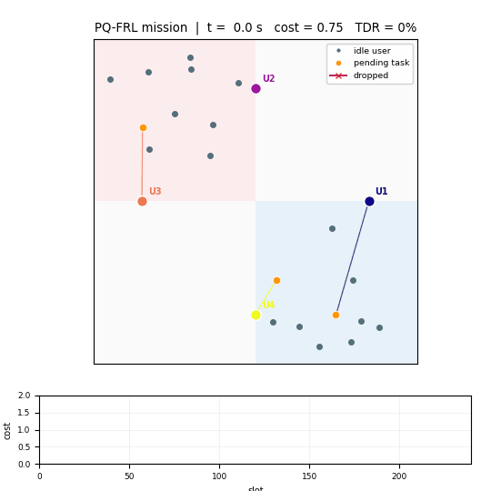
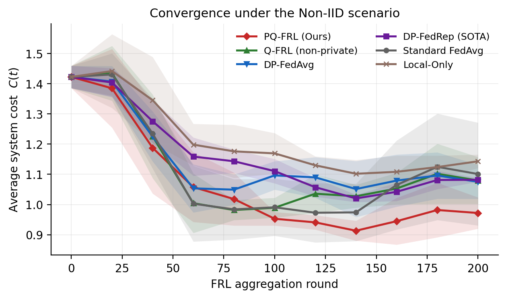
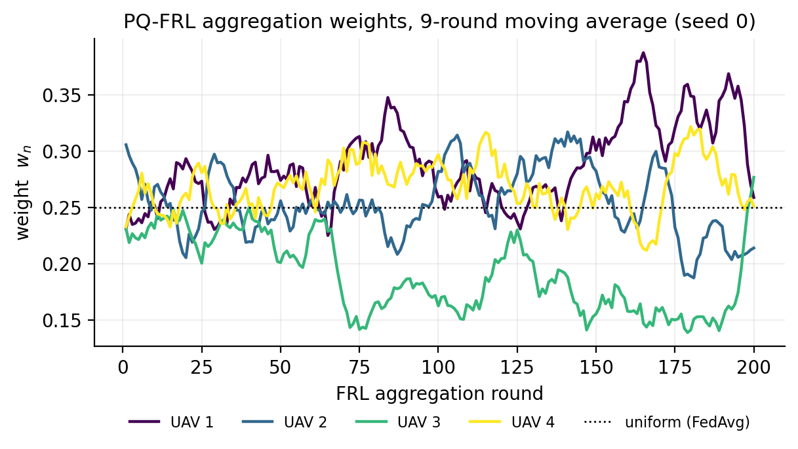
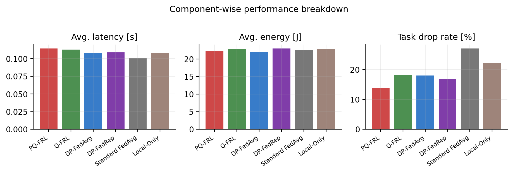

Privacy-preserving, quality-aware federated reinforcement learning for UAV-assisted edge computing
A compact, CPU-runnable demo of PQ-FRL: DDPG agents fly the UAVs, each round the actor update and the average reward are clipped and perturbed with calibrated Gaussian noise, and the ground station aggregates them with a softmax over the protected rewards.

How it works
Four pieces, each in its own module. The federated loop follows Algorithm 1 of the paper.
UAV-MEC environment
LoS uplink with OFDMA bandwidth sharing, local/edge execution with a hard deadline, rotary-wing propulsion power, and the weighted cost (latency, energy, drop rate).
DDPG over a mixed action space
Each actor emits speed, heading, one offloading probability and one CPU share per candidate user. The offloading threshold is discrete, so a straight-through estimator carries the critic gradient back to the relaxed variable.
Output-perturbation DP
Clipping plus calibrated Gaussian noise is applied once per round, at the upload boundary — on the actor update and on the average reward that drives the weighting.
Quality-aware softmax
The server weights each client by a softmax over its protected reward, so noisy or poorly adapted updates are down-weighted without any extra information leaving the UAV.
Illustrative results
Demo preset, hotspot layout, two random seeds. The figure is generated by experiments.py; the table reports the same runs.

| Method | Privacy | Aggregation | Converged cost |
|---|---|---|---|
| PQ-FRL | DP | protected-reward softmax | 0.97 ± 0.04 |
| DP-FedAvg | DP | uniform | 1.05 ± 0.03 |
| DP-FedRep | DP | reputation-weighted | 1.07 ± 0.01 |
| Local-only | — | none | 1.16 ± 0.03 |
Demonstration-scale numbers from this repository; see the README for the parameter deviations and for what these runs do not establish.


Run it
Two commands: one training run, or the figure suite. Every run caches its history, so figures can be rebuilt offline.
git clone https://github.com/vectordai2000/pq-frl-demo.git
cd pq-frl-demo
pip install -r requirements.txt
python train.py --algo pq-frl # one run, ~1 min on a laptop CPU
python experiments.py --figures convergence # rebuild the convergence figure
python make_animation.py # render the rollout GIF
What this is — and what it is not
- A readable reference implementation of the mechanism: environment, DDPG/STE, DP upload, quality-aware aggregation, and five baselines.
- Not the paper's simulation: 200 rounds instead of 5000, two seeds instead of five, a 64-unit MLP instead of (256, 128).
- The DP noise is scaled so that the mechanism stays visible on a small network; the strict calibration is one flag away.
- The simplified channel has no inter-UAV interference, so the swarm-size trend of the paper is not reproduced here.